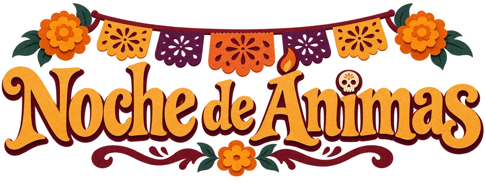

La casona espera. Siéntate a la mesa como investigador, o toma la cabecera y sé el ánima.
Los demás asientos los juegan bots.
Buscando la conexión… Las salas funcionan cuando abres la mesa dentro de claude.ai con tu sesión iniciada.
Prototipo de la mesa 3D · reglas v5 · arrastra la mesa para girar la cámara.